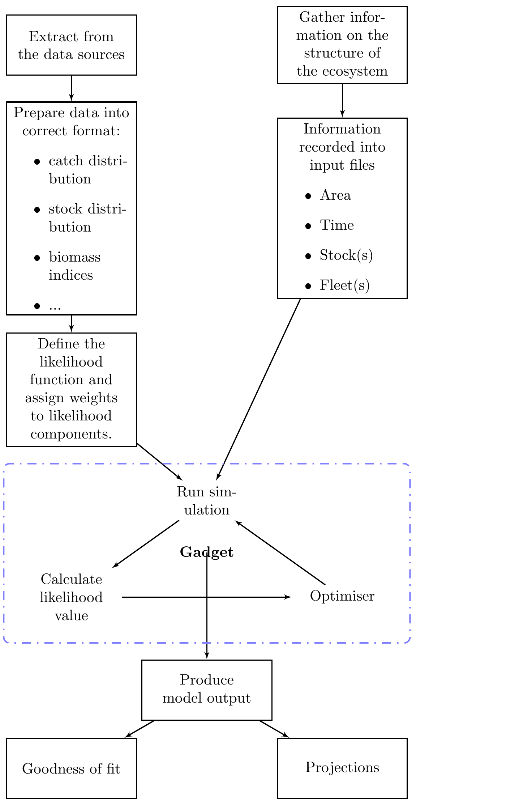

2 General context of Gadget
Ecosystem considerations appear to be an obvious, and necessary part, of the management of marine resources. Several international organizations have stressed the importance of studying ecosystems interactions in terms of management [eg. @sinclair2002responsible, @nammco1997]. Optimum fisheries management based on ecosystem consideration is however an elusive target. Even if the model sufficiently describes the target ecosystem, @voss2014regional illustrated that the definition of the this optimum is dependent on the manager’s view of the resource. Although the rationale for ecosystem based approach to fisheries management is strong its adoption has been slow, which @mollmann2013implementing suggests is due to lack of strategy. However the effects of species interactions on the management of a commercially exploited stock is a fairly complicated and data intensive excercise, as it requires data not directly observed by fisheries. @dickey2013ecosystem note therefore that the state of knowledge is not sufficient to embark on ecosystem engineering, although in theory this would have desirable effects on the status of key resources, as such an undertaking may have undesirable and unforseen consequences.
The choice of a modelling approach used to assimilate biological information such as those obtained from scientific surveys also needs some consideration. There are a number of approaches to ecosystems models. According to @plaganyi2007models they broadly fall broadly into four categories:
- Whole ecosystem approaches, where all trophic levels of the ecosystem are modelled [e.g. @christensen2004ecopath].
- Dynamic systems models, where where the whole ecosystem and possibly its effects to coastal communities is modelled [e.g. @link2010northeast].
- Extensions of single–species assesment models [e.g. @livingston1998incorporation].
- Minimum realistic models, where only a few but significant interactions are included. Examples of cases are models built using the Gadget framework [@begley2004overview].
Obviously these approaches differ substantiantly both in scope and objectives. Minimimum realistic models and singles species extensions are, as the names suggest, more focussed on answering key questions and their parameters are estimated statistically. Modelling approaches, like those using Atlantis [@fulton2005ecological] or Ecopath with Ecosim [@christensen2004ecopath], often try to include a larger part of the ecosystem where it becomes harder to estimate the model parameters through comparisons with real data. These grand models tend to be more useful when answering strategic questions, such as discussed by @fulton2011lessons, rather than more tactical issues such as direct advice on next years quota.
2.1 Gadget – a toolbox for fisheries stock assessments
Modelling approaches such as those allowed by Atlantis have, although interesting, tended to have quite obvious drawbacks in terms of comparisons to real data. Estimates of process parameters are far from trivial in this setting, both in terms of available data and more importantly computation time. A fullblown Atlantis model will generally take a substantial time for a single simulation and as such not obvious how one would obtain an ``optimal’’ fit in a statistical sense. That said, these types of model can provide valuable insight into how an ecosystems would behave. In particular one could study certain performance metrics, such as ecosystem indicators [as described in @fulton2005ecological], and various stock assessment models.
It has been observed that in various settings single species models of a marine resource fail to explain model deviations. To answer these questions extensions to the normal single species have been developed [as discussed in @magnusson1995msvpa and references therein ]. These extensions attempt to ecompass significant processes that affect the species of interest. A special type of these approaches are the mimimally realistic models mentioned above [also referred to as MICE models as discussed in @plaganyi2014multispecies].
A special modelling framework, Gadget [**G**lobally **a**pplicable, area--**d**isaggregated **e**cosystem **t**oolbox, described in @begley2005gadget], was developed to aid in the study of various statistical processes involved in multi–species assessments. The development of Gadget conceptually dates back to MULTSPEC [@bogstad1997multspec], which described a multi–species model for fish and marine mammals in the Barents sea. Many of the underlying concepts and most of the codebase that forms the Gadget framework was date back to Bormicon [@stefansson1997bormicon, @stefansson1998framework], which was developed as a continuation of a multi-species sampling program [described in @mrifjolst], which has been under constant developement and iterations. Notable iterations include the Fleksibest framework [@guldbrandsen2002fleksibest], a fork of Bormicon which was merged back with Bormicon to form Gadget as part of the dst\(^2\) project [@dst2].
The dst\(^2\) project was multi-objective project funded by the European
Union and began in 1999. The bas
idea was to develop fisheries science as far as information will support'' the development of statistically sound models of marine ecological processes,but strictly no further’’. Four main
objectives were the following:
- Collect relevant data and provide objective means to analyse them. This included the development of Gadget and a specialised data warehouse.
- Validate present stock assessment.
- Evaluate the appropriateness of complicated models when providing management advice.
- Evaluate and validate reference points used in management.
A substantial amount of analysis has subsequently been made on Cod in Icelandic waters using the Gadget modeling framework. Notably @taylor2007simple which describes a thorough analysis of the available data and potential weaknesses. In it a single species single area model is considered. A continuation of this work in a multi-stock multi-species multi-area setting are described in @taylor2011gadget. There it is seen that substantial improvements in the model fit are possible by considering a north – south division in the cod stock.
These developments have not been restricted to single–species models. A number of species have been analysed in a multi–species setting using Gadget. Notable implementaions include a model of the Barents sea of cod, capelin, herring and minke whales @lindstrom2009modelling and subsquently @howell2010combined where FLR @kell2007flr is used in connection with Gadget in a harvest control simulation.
 An illustration of a typical stock assessment process and the types of uncertainty associated with each step within Gadget.
2.2 Description of Gadget
Gadget is essentially three things, an ecosystem simulator, a likelihood function that takes the output from the ecosystem simulator and compares to data, and a function mininimizer. Gadget’s simulation module allows for a fairly configurable ecosystem simulation. Its fundamental unit, a stock (or more accurately substock), represents a group of individuals that is homogenous with respect to various processes. These processes include growth, predation (including commercial fisheries) and migration. In this setup different stages of the life history of a particular species would be represented as separate stocks and individuals ``moved’’ between stocks when required. The simulation takes place in a set number of years or observations and time-steps within an observation. Years can be broken down into a maximum of 12 time-steps. The time-steps within the observations allow for the emulation of the annual cycles of the ecosystem, such as recruitment and stock migrations.
The stock unit within Gadget is simply a representation of the total number of individuals within a certain age and length group from one or more certain area. When stocks live in multiple areas, they optionally migrate among areas during definable time-steps. In this setup, processes such as fleet harvest or recruitment can be restricted to take place only in certain areas. Harvesting of the substocks is defined through fleets that fish according to effort and (length–based) selection functions.
Gadget’s likelihood module processes the output from the ecosystem simulation after aggregating across certain dimensions. Within the likelihood module, a number of datasets can be compared to the model output. In addition to a suite of functions designed to work with different types of survey indices, various other types of data , can be contrasted to the model output including compositional data (such as length distributions, age distributions, age- and length-distribution, or proportions mature) or tagging data to name a few. Each dataset is compared to model output at its own aggregation level, with missing data handled in a robust manner.
In contrast with Gadget, age-based or stock production type stock assessments require data in a fairly processed form. For instance when using VPA one requires the total catch in numbers of individuals by age. However, apart from catches of fin whales in the North Atlantic @iwcistfin, one rarely has all catches by numbers at age. Therefore the age distribution of catches needs to be approximated using some combination of age readings, length distributions, total catches in tonnes and weight at age [as noted in @hirst2005estimating]. Essentially using VPA requires a two-step modelling process.
Gadget’s function minimizer, based on the negative log–likelihood (but implemented as a simple sum of squares), varies the model parameters, runs a full simulation, and calculates a new output. This process is repeated until a minimum is obtained. The model has three alternative optimising algorithms linked to it, a wide area search simulated annealing [@corana1987minimizing], a local search Hooke and Jeeves algorithm [@HookeJeeves1961] and finally one based on the Broyden-Fletcher-Goldfarb-Shanno algorithm (BFGS).
The simulated annealing and Hooke-Jeeves algorithms are not gradient based, and there is therefore no requirement for the likelihood surface to be smooth. Consequently neither of the two algorithms returns estimates of the Hessian matrix. Simulated annealing is more robust than Hooke and Jeeves and can find a global optima where there are multiple optima but needs about 2-3 times the order of magnitude in iterations than the Hooke and Jeeves algorithm to converge.
BFGS is a quasi-Newton optimisation method that uses information about the gradient of the function at the current point to calculate the best direction to look for a better point. Using this information the BFGS algorithm can iteratively calculate a better approximation to the inverse Hessian matrix. When compared to the two other algorithms implemented in Gadget, BFGS is a very local search compared to simulated annealing and is more computationally intensive than the Hooke and Jeeves. However the gradient search in BFGS is more accurate than the step-wise search of Hooke and Jeeves and may therefore give a more accurate estimation of the optimum. The BFGS algorithm used in Gadget is derived from that presented by @bertsekas1999nonlinear.
The total objective function to be minimised is a weighted sum of the different components. The estimation could be difficult due to groups of correlated parameters or multiple local optima. Therefore the optimisation procedure often involves a combination of the more robust simulated annealing, to make the results less sensitive to the initial (starting) values, and the local search algorithms (Hooke and Jeeves and BFGS), to obtain more accurate final values in the neighborhood of the global optimum.
2.3 This course
During this course we will attempt to introduce how the key topic listed here above are implemented in Gadget. You will learn how to set up a simulation model using Gadget using the Rgadget functions. We will briefly discuss the how you can add data to your model and subsequently fit the model, but fuller analysis of how to include data into the model is very case specific and requires an analysis of a developed model.